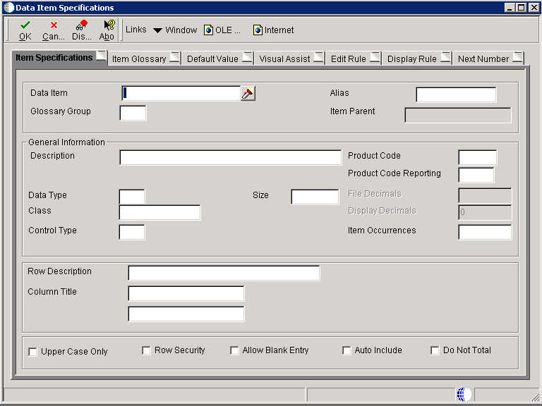

| Purpose |
| Overview |
| Scope |
| Details |
| Defining a Data Dictionary Item |
| Changes to Standard EnterpriseOne Data Items |
| Data Dictionary Triggers |
| Data Dictionary Tables |
| Deploying Data Dictionary |
| Data Dictionary Reports |
| Diagnosing Data Dictionary Issues |
| Finding Character Data Item Changes |
| Determining Data Items that have been Modified |
| Comparing the Values of Data Items in the Data Dictionary Master Tables and Spec Tables |
This document provides an overview of the EnterpriseOne Data Dictionary.
The EnterpriseOne Data Dictionary is used to create or modify Data Dictionary items for use in JD Edwards EnterpriseOne applications. Data Dictionary items not only define and describe data, but they also can trigger the runtime engine to react or process in certain ways by nature of their types. Furthermore, online help, error messages, term substitutions for different industries, and translations are all tied to Data Dictionary items.
Just as a dictionary contains word definitions, the EnterpriseOne Data Dictionary is a central repository that contains all of the database data items that are used in all of the EnterpriseOne applications. Each data item in the dictionary is defined by a number of attributes that describe parameters such as the data type, data length, and so forth. The system performs automatic error checking against these parameters when users enter values during runtime.
Additionally, data dictionary item attributes define how the data dictionary item should appear when placed on a form or report, including its title and whether to display default values. Also, all data dictionary items have an associated glossary in which you can enter text. If the data dictionary item is included on a form, this text appears when the user presses F1 of uses the Item Help option. The system also displays the glossary text under certain circumstances, such as for the content of an error message.
This document is intended for the System Administrator who is responsible for maintaining the Data Dictionary and troubleshooting Data Dictionary issues.
Data Dictionary items are the foundation of JD Edwards EnterpriseOne objects. You create Data Dictionary items for use as fields on a form, columns in a table, fields in a business view, members of a data structure, and fields on a report.
This is a list of the parameters that define DD items:
The application retrieves field information from the Data Dictionary. Fields marked with * can be overridden in Form Design Aid (FDA) and Report Design Aid (RDA).
Prior to EnterpriseOne Release 9.0, the Data Dictionary application must be run on Windows fat client. Beginning with release 9.0 and above, some functionality is available to run Data Dictionary application on Web client. This includes most functionality within the Data Dictionary application other than updates to glossary text. Updates to Glossary text must still be performed on the Windows client at release 9.0 and above. For known issues with Viewing Glossary Text using Data Dictionary on the Web in release 9.0 review Document 865514.1.
For additional information on Data Dictionary, refer to the following guides located on the Oracle Technology Network.
In addition, refer to Frequently Asked Questions on Data Dictionary
Data Dictionary items are entered within the Data Dictionary application P92001.

The following table details provides an explanation for the most common fields on this form.
| Field | Usage |
|---|---|
| Data Item | Enter a text string used to identify the Data Dictionary item. The text string can be up to 32 characters long. Blanks and the characters %, & , and + are not allowed. The field cannot be changed after you save the Data Dictionary item. When creating a custom data item, the recommended naming convention is to use a Y or Z in the first character of the data item name to distinguish an external data dictionary item from a JD Edwards EnterpriseOne data dictionary item. The data item name can be a maximum of 32 alphanumeric characters, and should adhere to this format: Ysssdddddddddddddddddddddddddddd, where:
|
| Alias | Enter a code that identifies and defines a data dictionary item. The Alias is an alphanumeric code up to eight characters long. Create new DD items using system codes 55-59. Once defined, you cannot change the alias of a data dictionary item. Within the Data Dictionary, all Data Dictionary items are referenced by the alias. As they are used in database tables, a two-character prefix is added to create unique data names in each table specification. Special characters are not allowed as part of the DD item name, with the exception of #, @, $. When creating a custom data item, the recommended naming convention is to use a Y or Z in the first character of the data item alias to distinguish an external data dictionary item from a JD Edwards EnterpriseOne data dictionary item. The data item name can be a maximum of 8 alphanumeric characters, and should adhere to this format: Ysssdddd, where:
|
| Glossary Group | Enter a code that indicates the type of Data Dictionary item. The field is validated against UDC H95/DG. Items that belong to glossary group D or S can be included in database tables. Items in other glossary groups (for example, Data Item Class) cannot be added to a table. |
| Description | Enter a description for the Data Dictionary item. |
| Product Code | The related system code for the Data Dictionary item. For custom data dictionary items, use system codes 55 - 59. |
| Product Code Reporting | The related system code used for reporting and jargon purposes. For custom data dictionary items, use system codes 55- 59. |
| Data Type | Enter an identifier of the style or classification of data, such as numeric, string, or date. Available data types include the following:
|
| Size | Enter a value that indicates the field size of the Data Dictionary Item |
| File Decimals | Enter a value that indicates the number of stored positions to the right of the decimal for the Data Dictionary item. |
| Display Decimals | Enter a value that designates the number of decimals in the amount or quantity fields the system displays. The system performs automatic formatting of amount fields based on the currency when working in a Multi-Currency environment. |
| Class | Enter a code that defines the Data Dictionary item class. The class defines the essential attributes and characteristics of a Data Dictionary item. |
| Control Type | Enter a code that defines the type control that is associated with the Data Dictionary item. The control type is used by Form Design Aid (FDA) to automatically add the correct control to a form for a specific Data Dictionary item. The available Control Types are the following:
|
| Item Occurrences | Enter a value that indicates the number of child data dictionary items to create. Item occurrences allows you to create an item as a child of another item. The Data Dictionary verifies that attributes are consistent between the parent and the child. If you change the parent item, the changes are duplicated in the child items. The DD item names use the parent DD item name and a number, such as a parent item ABC and child items ABC1, ABC2, and so on. |
| Row Description | The row description that identifies a field on a form or report. |
| Column Title | The column heading description used for the field on a form or report. |
| Upper Case Only | Set this flag to indicate whether the Data Dictionary item will accept lowercase text. If the value of this field is a Y, the user cannot enter lowercase characters into a control based on this data item. |
| Row Security | Set this flag to indicate whether the field can be used in setting up Row Security in Security Workbench (P00950). |
| Allow Blank Entry | Set this flag to indicate whether blank values can be written to the database. Select this option to allow blank entry under these conditions:
|
| Auto Include | Set this flag to indicate whether this column should be automatically included in all database fetches to tables that contain this item. This option should only be selected for items that are essential for certain database trigger processes or security validation. This item will automatically be selected when choosing the option for Row Security. |
| Do Not Total | The system makes this flag available for entry if the Data Dictionary item is of type numeric. When you select this option, the data item is marked Not to Total. When this item is used in a report, the item property, Suppress At Total, is automatically selected. |
Glossary items, Error Messages and Workflow Messages are entered within the Data Dictionary Glossary application P92002. The Glossary Group differentiates between the different types of messages.
The following items may be changed on a standard EnterpriseOne data dictionary item :
Some DD items, e.g. category codes, may be shipped with default values. These may be modified by creating Vocabulary Overrides. Review Document 626466.1 E1: DD: Vocabulary Overrides for more detailed information.
The following items should NEVER be changed on a standard EnterpriseOne Data Dictionary item:
A trigger is an editing or display routine that is attached at the data dictionary item level and initiated at runtime. Triggers are reusable objects and, therefore, automatically associated with each application that uses the Data Dictionary item. Triggers save time and increase the usefulness of the code because you can create the business logic only once and then use it within multiple applications. Triggers ensure accuracy and integrity of data across all applications.
Use triggers to perform these tasks:
Although you can override any of these triggers in Form Design Aid (FDA), you should anticipate how the Data Dictionary item will most often be used to reduce the need for overrides.
The following triggers are available within the Data Dictionary.
The Master Data Dictionary is stored in relational tables on the enterprise server:
Local specifications tables exist on every EnterpriseOne software Client and the Logic Server
Global Tables - glbltbl (.ddb and .xdb)
In the Web client environment, data dictionary information is built into the serialized object information for the applications that use the data dictionary items.
The Data Dictionary Item Glossary is stored in the F00165 Media Object Table. This table exists in its own Data Dictionary data source generally named Data Dictionary - E1 Release. The glossary information is stored using the Media Object data structure GT92002. This data structure is mapped to the Data Dictionary data source via Object Configuration Manager (OCM).
When using the Data Dictionary applications to add new or update existing Data Dictionary items, the change is made in the Data Dictionary relational database tables. Since Data Dictionary specification files exist locally on the Windows workstation, on the Enterprise Server and within the serialized object information on the Web Client, any data dictionary change must be deployed throughout the EnterpriseOne environment. Refer to the following documents for details on deploying Data Dictionary changes:
The following reports are available to report on information within the Data Dictionary.
Occasionally a change to a data dictionary item can result in memory violations within applications or cause applications to return invalid results. These situations can be difficult to diagnose. The following are some troubleshooting techniques to determine if the issue is truly caused by a Data Dictionary change and what items have been changed.
Any data item defined as a character should have a length of 1. If this has been changed, it can cause issues with the character data item. It first must be determined if the issue is being caused because of a character data item being changed to a value other than 1 by following the steps below:
If one or more items are returned that means this is a character data item with a size other than 1. If an item was returned, use the following steps to correct the character data item.
A change to a standard EnterpriseOne data item can result in issues within an application using the data item. Report R920022 Print All Data Dictionary Adds and Changes can be used to determine data items within the Data Dictionary that have been modified.
The report displays the following fields from the F9200 - Data Item Master : Date Updated, DD Alias, User ID, Program ID, Workstation ID, Time Updated.
Adding additional fields of Glossary Group, Product Code to the report and a Page Break on Glossary Group can be done by modifying the report using Report Design Aid:
If a full detailed listing of the Data Item is required, run report R92400 with data selection for the specific data item.
If a Data Dictionary change is not deployed correctly within the EnterpriseOne environment, this can result in Data Dictionary related issues. To compare the values of Data Items in the Data Dictionary Master Tables and the values in the Spec Tables, use the following steps